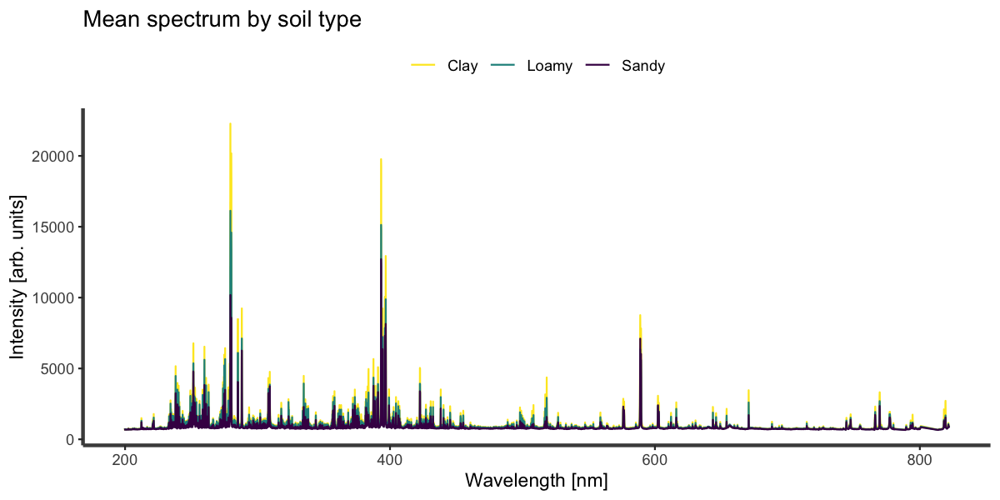
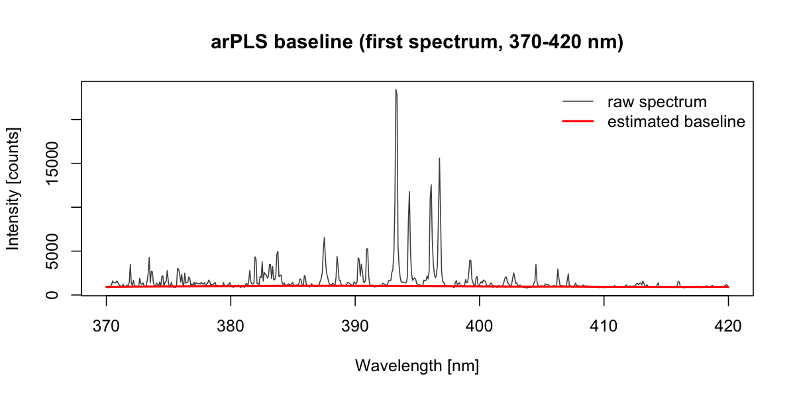
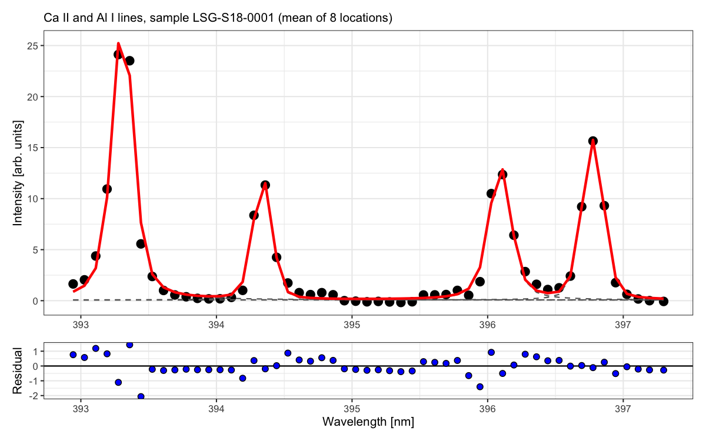
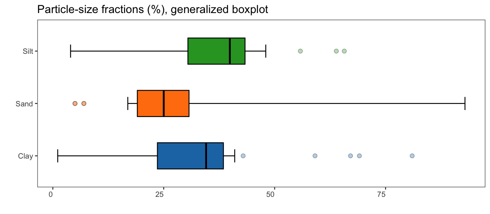

specProc is an R package for preprocessing and exploring emission spectra, with a focus on laser-induced breakdown spectroscopy (LIBS). It covers the full chain between raw detector counts and a data matrix ready for modeling:
- Baseline correction: asymmetric least squares, arPLS, and iterative polynomial fitting.
- Normalization and scaling: SNV, MSC, area, background and internal-standard normalization; Pareto, Poisson and min-max scaling.
- Removing unwanted variation: OSC (three algorithms), direct orthogonalization, DOSC, NAS, O2PLS, projected OSC, EPO, GLSW.
- Calibration transfer between instruments: PDS, GLSW.
- Line fitting: exact Voigt, pseudo-Voigt, Gaussian and Lorentzian profiles, for single or overlapping lines.
- Robust statistics and outlier detection: biweight estimators, Rousseeuw–Croux Sn/Qn, bias-corrected MAD, medcouple-based skewness and tail weights, adjusted and generalized boxplots, directional outlyingness.
The computationally heavy steps are written in C++: penalized baselines use a banded solver, the Voigt profile uses the Faddeeva function, and the large matrix decompositions use Eigen. This keeps the package practical for data sets with thousands of spectra and channels.
Installation
specProc is not yet on CRAN. Install the development version from GitHub:
# install.packages("remotes")
remotes::install_github("ChristianGoueguel/specProc", build_vignettes = TRUE)A C++ compiler is needed to build the package from source (Rtools on Windows, Xcode Command Line Tools on macOS). opls() additionally needs the Bioconductor package ropls: BiocManager::install("ropls").
Design principles
- Tidy in, tidy out. Spectra are stored one per row, and the column names are the wavelengths. Functions accept matrices, data frames or tibbles and return tibbles.
- Preprocessing parameters are returned, not hidden. Centers, scales, reference spectra, filter matrices and loadings come back with the result. You can then estimate a transformation on calibration data and apply exactly the same transformation to new data.
- Robust alternatives are available alongside the classical estimators. Emission spectra contain outlying shots, saturated channels and heavy tails, and the robust estimators are designed for them.
- The numerics are tested against references. The test suite (more than 400 expectations) checks results against analytic values, dense reference solvers and independent implementations, such as the Bioconductor ropls package for OPLS.
Example data
The package ships with specLIBS: LIBS spectra of 50 soil samples, each measured at 8 locations. The spectra have 7152 channels between 199 and 822 nm, stored as raw counts, together with the clay, sand and silt content of each sample.
library(specProc)
data(specLIBS)
meta <- specLIBS[1:8] # sample information
X <- as.matrix(specLIBS[-(1:8)]) # 400 x 7152 intensity matrix
wl <- as.numeric(colnames(X)) # wavelengths (nm)
dim(X)
#> [1] 400 7152
table(soil_type = meta$Type) / 8 # number of samples per soil type
#> soil_type
#> Clay Loamy Sandy
#> 6 37 7The design is nested: the 8 spectra of a sample are repeated measurements of the same material, not independent observations. Treating them as 400 independent samples inflates the apparent sample size and biases cross-validated errors downward. The worked example below uses the sample as the unit of analysis wherever it matters.
by_type <- average(cbind(Type = meta$Type, as.data.frame(X)), Type)
plot_spectra(by_type, id = Type) +
ggplot2::theme(legend.position = "top") +
ggplot2::labs(color = NULL, title = "Mean spectrum by soil type")
A worked example
1. Baseline correction
LIBS spectra sit on a continuum from bremsstrahlung and recombination radiation. baseline_arpls() estimates it with asymmetrically reweighted penalized least squares. Positive residuals (the emission lines) are downweighted, so the baseline follows the continuum instead of the peaks. The smoothing parameter lambda controls how stiff the baseline is.
bl <- baseline_arpls(X, lambda = 1e5, max.iter = 20)
Xc <- as.matrix(bl$correction)
The baseline is a model estimate, and the choice of lambda propagates into line areas. Report the value you used, and check how sensitive your downstream results are to it.
2. Normalization and shot-to-shot repeatability
Laser–sample coupling changes from shot to shot, so the whole spectrum fluctuates in intensity. Normalization aims to remove this multiplicative effect. The relative standard deviation (RSD) of a line across the 8 locations of a sample measures how well it works. The lower the RSD, the more repeatable the measurement:
line_area <- function(M, center, half_width = 0.15) {
rowSums(M[, abs(wl - center) < half_width, drop = FALSE])
}
within_rsd <- function(v) {
median(tapply(v, meta$Sample, function(z) sd(z) / mean(z) * 100))
}
Xsnv <- as.matrix(snv(Xc)$correction)
Xarea <- as.matrix(normalize(as.data.frame(Xc), method = "area"))
tibble::tibble(
preprocessing = c("raw", "baseline", "baseline + area", "baseline + SNV"),
`median RSD of Ca II 393.37 nm (%)` = round(c(
within_rsd(line_area(X, 393.37)),
within_rsd(line_area(Xc, 393.37)),
within_rsd(line_area(Xarea, 393.37)),
within_rsd(line_area(Xsnv, 393.37))
), 2)
)
#> # A tibble: 4 × 2
#> preprocessing `median RSD of Ca II 393.37 nm (%)`
#> <chr> <dbl>
#> 1 raw 6.19
#> 2 baseline 6.73
#> 3 baseline + area 5.44
#> 4 baseline + SNV 3.79On this data set, SNV reduces the typical shot-to-shot RSD of the Ca II line by about 40%. Baseline subtraction alone slightly increases the RSD. This is expected: the raw line area includes the detector offset and continuum, a large and relatively stable component that dilutes the relative variation. Removing it exposes the true variability of the line, which normalization then has to correct. Which normalization works best depends on the matrix and the line, so compare the options on replicate spectra rather than assuming one.
3. Screening outlying shots
A misfired or defocused shot can bias a sample’s mean spectrum. Compare each shot with the other shots of the same sample, using a robust z-score (median and MAD) of the total emitted intensity:
total <- rowSums(X)
robust_z <- ave(total, meta$Sample, FUN = function(v) (v - median(v)) / mad(v))
table(flagged = abs(robust_z) > 3.5)
#> flagged
#> FALSE TRUE
#> 384 16The median and MAD are used because, with 8 shots per sample, a single aberrant shot shifts the mean and inflates the standard deviation enough to hide itself. zscore(robust = TRUE), iqr_outliers(skew = TRUE) (medcouple-adjusted fences) and directional_outlyingness() provide the same screening for a single vector.
4. Averaging replicates
After screening, reduce each sample to one spectrum. average() computes group means in C++:
5. Fitting emission lines
The Ca II 393.37 / 396.85 nm and Al I 394.40 / 396.15 nm lines overlap in the 393–397 nm window. multipeak_fit() fits them jointly as a sum of exact Voigt profiles on a common baseline. Each line’s center, Gaussian and Lorentzian widths (FWHM) and area are estimated by Levenberg–Marquardt least squares.
window <- names(Xs)[-1][wl > 392.9 & wl < 397.3]
fit <- multipeak_fit(
Xs[1, c("Sample", window)],
peaks = c(393.37, 394.40, 396.15, 396.85),
profiles = "voigt",
id = "Sample"
)
fit$tidied[[1]]
#> # A tibble: 17 × 5
#> term estimate std.error statistic p.value
#> <chr> <dbl> <dbl> <dbl> <dbl>
#> 1 y0 0.0712 0.232 0.307 7.61e- 1
#> 2 xc_1 393. 0.00246 159628. 6.64e-161
#> 3 wG_1 0.129 0.0257 5.00 1.50e- 5
#> 4 wL_1 0.0943 0.0265 3.56 1.06e- 3
#> 5 A_1 6.68 0.394 17.0 9.28e- 19
#> 6 xc_2 394. 0.00530 74474. 5.52e-149
#> 7 wG_2 0.144 0.0423 3.39 1.70e- 3
#> 8 wL_2 0.0374 0.0569 0.658 5.15e- 1
#> 9 A_2 2.27 0.342 6.65 9.48e- 8
#> 10 xc_3 396. 0.00534 74156. 6.44e-149
#> 11 wG_3 0.141 0.0466 3.03 4.52e- 3
#> 12 wL_3 0.0894 0.0536 1.67 1.04e- 1
#> 13 A_3 3.26 0.393 8.29 7.14e- 10
#> 14 xc_4 397. 0.00426 93151. 1.75e-152
#> 15 wG_4 0.162 0.0314 5.15 9.44e- 6
#> 16 wL_4 0.0442 0.0428 1.03 3.08e- 1
#> 17 A_4 3.41 0.346 9.84 9.64e- 12
plot_fit(fit, title = "Ca II and Al I lines, sample LSG-S18-0001 (mean of 8 locations)")
Read the parameter table critically:
- The standard errors are conditional on the model. They assume independent, homoscedastic Gaussian errors. LIBS noise is closer to Poisson, and residuals are correlated along the wavelength axis, so treat these standard errors as lower bounds. The spread of the parameters across the 8 replicate locations is a more honest measure of uncertainty.
- Some parameters are poorly identified. The Lorentzian widths of the weaker lines are not significantly different from zero. The data cannot separate Stark from Doppler/instrumental broadening for those lines. Consider fixing them, or using a simpler profile.
The exact Voigt profile is also available directly. voigt_profile() uses the Faddeeva function and is accurate to about 1e-10. The faster pseudo_voigt_profile() approximation deviates from it by up to about 1%:
x <- seq(-2, 2, length.out = 400)
v <- voigt_profile(x, y0 = 0, xc = 0, wG = 0.6, wL = 0.4, A = 1)
pv <- pseudo_voigt_profile(x, y0 = 0, xc = 0, wG = 0.6, wL = 0.4, A = 1)$y
max(abs(v - pv)) / max(v)
#> [1] 0.012345096. Descriptive statistics: classical and robust
The texture fractions are bounded (0–100%), skewed, and contain a few extreme samples. The robust summary reports the median, MAD, Sn and Qn, biweight estimators, and medcouple-based measures of skewness and tail weight:
summary_stats(samples[c("Clay", "Sand", "Silt")])
#> # A tibble: 3 × 14
#> variable mean mode median IQR sd variance cv min max range
#> <chr> <dbl> <dbl> <dbl> <dbl> <dbl> <dbl> <dbl> <dbl> <dbl> <dbl>
#> 1 Clay 31.8 35.1 34.6 14.9 16.1 260. 50.6 1.1 81 79.9
#> 2 Sand 33.6 19 25 11.6 25.2 637. 75.1 5 92.9 87.9
#> 3 Silt 34.6 39.9 39.9 12.9 15.4 237. 44.5 4 65.7 61.7
#> # ℹ 3 more variables: skewness <dbl>, kurtosis <dbl>, count <int>
summary_stats(samples[c("Clay", "Sand", "Silt")], robust = TRUE)
#> # A tibble: 3 × 13
#> variable median mad Qn Sn medcouple LMC RMC biloc biscale bivar
#> <chr> <dbl> <dbl> <dbl> <dbl> <dbl> <dbl> <dbl> <dbl> <dbl> <dbl>
#> 1 Clay 34.6 6.75 8.26 7.15 -0.45 0.23 -0.3 34.2 11.2 126.
#> 2 Sand 25 8.9 8.47 9.42 0.06 0.02 0.85 22.9 9.1 82.8
#> 3 Silt 39.9 6.08 8.26 8.22 -0.5 0.44 0.02 40.0 8.54 72.9
#> # ℹ 2 more variables: rcv <dbl>, count <int>The medcouple (MC) is a robust measure of skewness, bounded in [−1, 1]. For Clay and Silt it is strongly negative (left skew). Where the mean and median, or the SD and robust scale, disagree, a few observations are driving the classical estimates.
The generalized boxplot (Bruffaerts et al., 2014) fits a Tukey g-and-h distribution, so its whiskers adapt to both skewness (g) and tail heaviness (h). Its fences are placed so that, under the fitted model, the chosen proportion alpha of observations falls outside them:
generalized_boxplot(samples[c("Clay", "Sand", "Silt")], xlabels.angle = 0) +
ggplot2::coord_flip() +
ggplot2::labs(title = "Particle-size fractions (%), generalized boxplot")
7. Correlation: why robustness matters
How strongly do line intensities track clay content? Compare Pearson’s correlation with the biweight midcorrelation, which downweights observations far from the bulk of the data:
Xmat <- as.matrix(Xs[-1])
lines_df <- data.frame(
Clay = samples$Clay,
`Mg II 279.55` = line_area(Xmat, 279.55),
`Si I 288.16` = line_area(Xmat, 288.16),
`Ca II 393.37` = line_area(Xmat, 393.37),
`Al I 396.15` = line_area(Xmat, 396.15),
`K I 766.49` = line_area(Xmat, 766.49),
check.names = FALSE
)
pearson <- correlation(lines_df, Clay)
bicor <- correlation(lines_df, Clay, method = "bicor")
merge(pearson[1:2], bicor[1:2], by = "variable", suffixes = c("_pearson", "_bicor"))
#> variable .correlation_pearson .correlation_bicor
#> 1 Al I 396.15 -0.6442892 -0.2391099
#> 2 Ca II 393.37 -0.5734797 -0.4272420
#> 3 K I 766.49 0.7676607 0.5171088
#> 4 Mg II 279.55 0.7565064 0.3375982
#> 5 Si I 288.16 -0.5498840 -0.3494116The two coefficients disagree sharply for some lines, notably Mg, which means a handful of extreme-texture samples drive the Pearson values. Neither number is “the” correlation. The gap tells you to look at the scatter plots, and to be cautious about extrapolating to the bulk of the data. correlation() also provides Spearman, Kendall and Chatterjee’s ξ, which captures non-monotonic dependence.
8. Removing unwanted variation
Remaining shot-to-shot differences within a sample are nuisance variation. External parameter orthogonalization (EPO) estimates the dominant directions of such variation from a clutter matrix and projects them out. The clutter matrix here is the deviation of each spectrum from its sample mean:
sample_means <- apply(Xsnv, 2, function(v) ave(v, meta$Sample))
clutter <- Xsnv - sample_means
sd_ca <- function(M) median(tapply(line_area(M, 393.37), meta$Sample, sd))
sapply(c(0, 1, 2, 3, 5), function(k) {
M <- if (k == 0) Xsnv else as.matrix(epo(Xsnv, ncomp = k, clutter = clutter)$correction)
c(ncomp = k, within_sample_sd = round(sd_ca(M), 3))
})
#> [,1] [,2] [,3] [,4] [,5]
#> ncomp 0.000 1.000 2.000 3.000 5.000
#> within_sample_sd 1.933 1.636 1.014 0.912 0.839Here the clutter directions are estimated from the same spectra they are evaluated on, so this reduction is optimistic. In practice, estimate the EPO projection (or a glsw() filter) on calibration samples only, and choose ncomp by cross-validation with folds formed by sample.
The same rule applies to supervised filters that use the response: osc(), direct_osc(), direct_orthogonal(), nas(), o2pls() and projected_osc(). Refit them inside each cross-validation fold. If a filter is fitted once on all the data before cross-validating, the estimated prediction error is biased downward. Each function returns what you need to apply the fitted filter to new spectra: loadings, weights, centers and scales.
Learn more
The vignettes develop the example above in more depth:
-
vignette("preprocessing", package = "specProc"): choosing and checking each preprocessing step against replicate data. -
vignette("line-fitting", package = "specProc"): choosing a line profile, and the sources of uncertainty in fitted line areas. -
vignette("calibration", package = "specProc"): predicting soil clay content with a compositional (log-ratio) PLS model, and estimating prediction error without leakage.
They are also available as articles on the package website.
Function overview
Robust estimators at a glance
For estimators of scale, the breakdown point is the largest fraction of contaminated observations the estimator can tolerate. The efficiency is its asymptotic efficiency relative to the standard deviation for normal data.
| Estimator | Function | Breakdown point | Efficiency |
|---|---|---|---|
| Standard deviation | stats::sd() |
0% | 100% |
| MAD (bias-corrected) | umad() |
50% | 37% |
| Rousseeuw–Croux Sn | rousseeuw_croux(estimator = "Sn") |
50% | 58% |
| Rousseeuw–Croux Qn | rousseeuw_croux(estimator = "Qn") |
50% | 82% |
| Biweight midvariance |
biweight_midvariance(), biweight_scale()
|
high | ≈ 87% |
umad() and rousseeuw_croux() include finite-sample bias corrections (Park et al., 2020; Akinshin, 2022), so they are also unbiased at the normal distribution for small samples, such as the 8 replicates per sample.
Performance
Timings on the full specLIBS data set (400 spectra × 7152 channels) on an Apple Silicon desktop:
| Operation | Time |
|---|---|
baseline_arpls(), 400 spectra |
0.6 s |
baseline_als(), 400 spectra |
0.5 s |
epo(ncomp = 3) |
0.4 s |
snv() |
0.08 s |
voigt_profile(), 10⁶ points |
0.07 s |
For comparison, one iteration of the dense penalized least-squares solve for a single 7152-channel spectrum takes about 30 s. The banded solver does the same computation in linear time.
References
The main methodological references are:
- Baek, S.-J., et al. (2015). Baseline correction using asymmetrically reweighted penalized least squares smoothing. Analyst, 140, 250–257.
- Eilers, P.H.C., Boelens, H.F.M. (2005). Baseline correction with asymmetric least squares smoothing.
- Roger, J.-M., Chauchard, F., Bellon-Maurel, V. (2003). EPO-PLS external parameter orthogonalisation of PLS. Chemometr. Intell. Lab. Syst., 66, 191–204.
- Martens, H., et al. (2003). Pre-whitening of data by covariance-weighted pre-processing. J. Chemometrics, 17, 153–165.
- Trygg, J., Wold, S. (2002). Orthogonal projections to latent structures (O-PLS). J. Chemometrics, 16, 119–128.
- Weideman, J.A.C. (1994). Computation of the complex error function. SIAM J. Numer. Anal., 31, 1497–1518.
- Rousseeuw, P.J., Croux, C. (1993). Alternatives to the median absolute deviation. JASA, 88, 1273–1283.
- Hubert, M., Vandervieren, E. (2008). An adjusted boxplot for skewed distributions. Comput. Stat. Data Anal., 52, 5186–5201.
- Bruffaerts, C., Verardi, V., Vermandele, C. (2014). A generalized boxplot for skewed and heavy-tailed distributions. Stat. Probab. Lett., 95, 110–117.
Each function’s help page gives the full references for its method.
Contributing
Bug reports and feature requests are welcome on the issue tracker. Please include a minimal reproducible example.